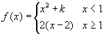
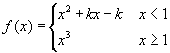

This device cannot display Java animations. The above is a substitute static image
1 A piecewise function
The first example shows the piecewise function

For the initial value of
k = 0, the function is not continuous at
x = 1, as is clear from the graph. Is there a value of k that will make the function continuous at
x = 1? Try moving the
k slider, or type in a guess for
k. How would you use algebra to compute this
k from the definition of the function? Think about what you did graphically (tried to make the two parts of the function connect at
x = 1); how could you express that in an equation that could then be solved for
k? You can also zoom in near the point where the two pieces need to connect by clicking on that spot.
2. A second piecewise function
Select the second example, which shows another piecewise function

This function is continuous at
x = 1, but is not differentiable there when
k = 0, as you can see from looking at the first derivative graph. Is there a value for
k that makes the function differentiable at
x = 1? Move the slider to try and find one. Is there a way using calculus and algebra to compute this
k from the function's definition? Think about what you did graphically (tried to make the two parts have the same slope at
x = 1); how could you express that in an equation that could then be solved for
k?
Other differentiation topics
(C) 2011 Copyright Math Open Reference.
All rights reserved